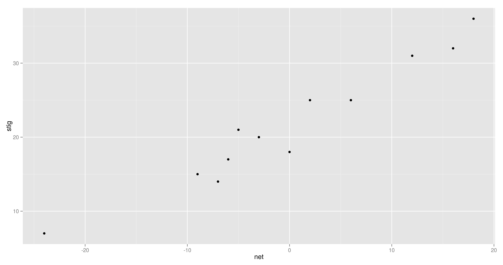
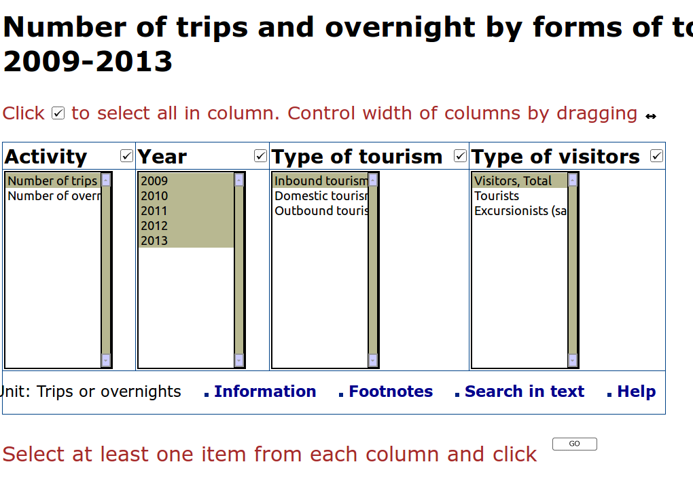

library(RCurl)
library(RJSONIO) #more stuff
for (year in (2010:2014)) {
for (month in (1:12)) {
theURL <- "http://stats.grok.se/json/is/"
theURL <- paste0(theURL, year)
theURL <- paste0(theURL, month) # Some month magic here
theURL.HI <- paste0(theURL, "/Háskóli_Íslands")
rawData.HI <- getURL(theURL.HI)
data.HI <- fromJSON(rawData.HI)
df.HI <- data.frame(Date=names(data.HI$daily_views),Views=data.HI$daily_views)
df.HI <- df.HI[df.HI$Views > 0,]
df.HI$Date <- as.Date(df.HI$Date)
alldata.HI <- rbind( alldata.HI, df.HI ) # And more
}
}
Throttling
2 step authentication: OAuth
Pepsi-Deildin table
From there to here

my $url = "http://www.ksi.is/mot/motalisti/urslit-stada/?MotNumer=33503";
my $dom = Mojo::DOM->new( get $url );
my $classification_data = $dom->find("table#stodu-tafla tr");
my %classification;
shift @$classification_data; # off with the headers
my %data = ( u => 3,
j => 4,
t => 5,
net => 7,
stig => 8 );
for my $p ( @$classification_data ) {
my $rows = $p->find( "td" );
my $team = $rows->[1]->all_text();
$classification{$team} = {};
for my $d ( keys %data ) {
$classification{$team}->{$d} = $rows->[$data{$d}]->text();
}
}
say to_json \%classification ;
Beautiful soup, hPricot, Cheerio
Surf the data

use WWW::Mechanize;
my $url = "https://rannsokn.hagstofa.is/pxen/Dialog/varval.asp?ma=SAM08005&ti=Number%20of%20trips%20and%20overnight%20by%20forms%20of%20tourism%20and%20classes%20of%20visitors,%202009-2013%20%20%20%20%20%20%20%20%20%20%20%20%20%20%20%20%20%20%20&path=../Database/ferdamal/ferdaidnadur/&lang=1&units=Trips%20or%20overnights";
my $mech = WWW::Mechanize->new();
$mech->get( $url );
$mech->select('values1','2');
$mech->select('values2', ['1','2','3','4','5']);
$mech->select('values3', '1');
$mech->select('values4', '1');
my $first_response = $mech->submit_form();
if ($first_response->is_success) {
print $first_response->decoded_content;
}
else {
print STDERR $response->status_line, "\n";
} #Much more stuff here
#!/usr/bin/env perl
use strict;
use warnings;
use LWP::Simple;
use v5.14;
my $url= shift || "http://www.althingi.is/altext/cv/en/?nfaerslunr=97";
my $data = get($url);
my ($name) = ($data =~ m{
([^<]+)
});
my ($birth_month, $birth_year ) = ( $data =~ m{Date of Birth: (\w+).+(\d+)} );
my ($party) = ( $data =~ m{strong>Party: ([^<]+)} );
say "=> $name, $birth_month, $birth_year, $party";